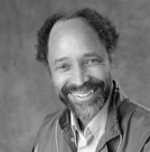

Dr. Clarence “Skip” Ellis was chosen as our innovator because he was the first African American to earn a Ph.D. in Computer Science. Born in Chicago, Illinois, on May 11, 1943, Ellis grew up on the South Side in a poor neighborhood where his mother struggled to raise five children alone. Despite facing violence, gang activity, and financial hardships, he remained focused on his education. After learning about a scholarship to Beloit College from his pastor, he became the only African American student enrolled at the university. Although he initially struggled with the transition to college-level courses and often felt excluded, he worked hard, sought help from professors, and eventually discovered his passion for computers. He double-majored in mathematics and physics and served as director of the computer lab. Ellis initially enrolled at MIT for graduate school but, due to his civil rights activism, completed his Ph.D. at the University of Illinois at Urbana-Champaign in 1969, becoming the first African American to earn a Ph.D. in Computer Science. His determination was driven by his desire to make his mother proud and his admiration for the civil rights movement and Dr. Martin Luther King Jr. Ellis passed away on May 17, 2014, in Denver, Colorado. Dr. Ellis made significant contributions to computer science and informatics, particularly in developing technology that allowed people to communicate and collaborate over the internet. While working at Xerox PARC, he helped develop OfficeTalk, an early system that allowed people in different locations to work together, and contributed to the innovation of operational transformation, which allows multiple users to work on the same document simultaneously without interfering with one another. His work connects to all three pillars of informatics: computational thinking, design thinking, and sociotechnical thinking. He helped solve the technical challenges of real-time collaboration, focused on making technology more accessible and useful for different users, and recognized the importance of how people interact and work together through technology. His contributions are still visible today through platforms such as Google Docs and Microsoft Word, which allow multiple people to collaborate on the same document from different locations. His work has become such a common part of everyday technology that it is easy to overlook how revolutionary his contributions were.
Layout provided by Bootstrap